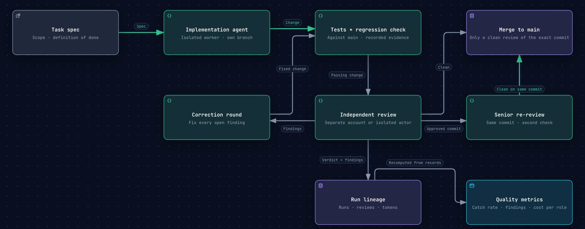

Case study · Agentic Workflow Orchestration Platform (AWOP)
AI agents write the code.
Tests and an independent review decide what merges.
Built for code that moves money. Several AI coding agents work in parallel; every change is tested against main, reviewed by a separate agent, and held back until every finding is fixed.
The problem
AI coding agents write code fast. Without structure, nobody can say what changed, whether it was tested or who checked it. A first draft that looks right is not the same as a change that is safe to merge.
How a change reaches main
- Task spec. Each task starts with a scope and a definition of done.
- Implementation agent. One agent works on its own branch, isolated from the others.
- Tests against main. The change must not make the test suite worse than main.
- Independent review. A separate agent, on another account or as an isolated actor, reviews the change and returns a verdict with findings.
- Correction loop. Every finding goes back for a fix, and the fixed change goes through the tests and the review again.
- Second check. A senior review re-audits approvals on the same commit.
- Merge. Only a clean review of the exact commit merges. Every run is recorded, so the numbers below are recomputed from records, not from memory.

What was measured
How strict the gate is: agent changes held back until fixed
402 agent changes with a review verdict. Bar: observed share. Whisker: 95% Wilson interval.
Hold-back rate: changes the review held back until fixed (k) over changes with a review verdict (n).
95% Wilson interval with z = 1.96. With n = 402, the rate is not a lucky streak: the plausible range stays between 75.1% and 83.0%.
Average technical findings per reviewed change. Each one had to be fixed before the change could merge.
Strict by design
In a financial system, “probably fine” is not a reason to merge. This platform builds the code behind a live trading decision engine, so the bar is set where a trading desk would set it: nothing reaches main until the review has nothing left to object to.
That is why 79.4% of agent changes were held back on review. Each one went back with its findings, was fixed, and passed the tests and the review again. The agents keep their speed; the gate keeps its standard. Of the approvals re-audited on the same commit, none merged with an open finding.
A gate that rarely says no is not checking much. This one says no until the work is right.
How it was measured
- Snapshot taken on 11 Nov 2026 from the platform's run lineage: 5,691 eligible agent runs and 1,623 structured reviews.
- Every rate is recomputed from the recorded runs and reviews, and is shown with its sample size.
- The unit is one agent change with a review verdict, not one run or one task.
Stated limit. Control is measured up to the merge. It does not prove zero defects in production.
What stays private
The platform itself, its code, its prompts, its routing rules and its shared engineering standard stay private. This page shows the problem, how it was measured and the result.
Want this on your own repository?
AWOP is available as a custom implementation on a team's own repository, CI and AI accounts. I am also open to remote roles in agentic AI engineering and quantitative development.
Book a 30-minute intro call See the services